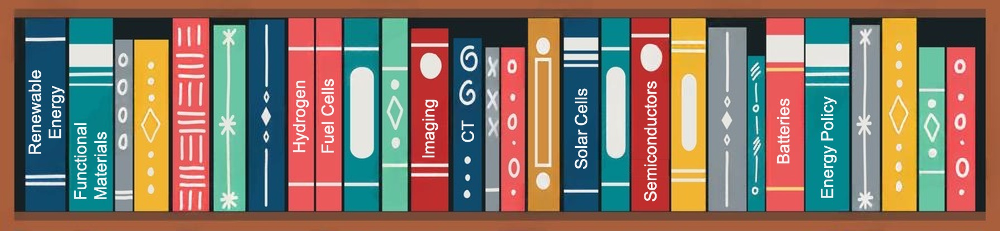

Panoramica della ricerca
Sistema energetico a basse emissioni di carbonio, basato sull'idrogeno e sulla rete elettrica

Pubblicazioni
- Energia rinnovabile / Elettrochimica
-
S. N. Artigas, H. Xu* [FDB], F. Mack
Utilizzo dell'analisi della distribuzione dei tempi di rilassamento come strumento diagnostico in situ per la gestione dell'acqua nelle applicazioni delle celle a combustibile PEM [J]
Co-autore:[Freudenberg] | Citato da:[Univ. Tsinghua]
2024 | J. Power Sources [PDF] -
H. Xu* [PSI], M. Bührer, F. Marone, Prof. T. J. Schmidt, F. N. Büchi, J. Eller
Effetti dei substrati della membrana di diffusione dei gas sulla gestione dell'acqua delle PEFC: Parte II. Disidratazione dell'acqua liquida in situ tramite evaporazione [J]
Co-autore:[Source de lumière suisse] | Citato da:[TOYOTA] [BOSCH]
2022 | J. Electrochem. Soc. [PDF] -
S. van Rooij, M. Magnini, A. Mularczyk, H. Xu* [PSI], F. N. Büchi [PSI], Prof. S.
Haussener [EPFL]
Trasferimento di calore conduttivo nelle membrane di diffusione dei gas parzialmente saturate con raffreddamento per evaporazione [J]
Co-autore:[Source de lumière suisse] [EPFL]
2022 | J. Electrochem. Soc. [PDF] -
H. Xu* [PSI], S. Nagashima [TOYOTA], H. Nguyen, K. Kishita, F. Marone, F. N. Büchi, J.
Eller [PSI]
Meccanismo di trasporto dell'acqua dipendente dalla temperatura nelle membrane di diffusione dei gas PEFC rivelato tramite microscopio tomografico operando a sub-secondi [J]
Co-autore:[TOYOTA] | Citato da:[BOSCH] [Univ. Tsinghua] [Univ. di Toronto]
2021 | J. Power Sources [PDF] -
H. Xu* [PSI], M. Bührer, F. Marone, Prof. T. J. Schmidt [ETH], F. N. Büchi, J. Eller
[PSI]
Effetti dei substrati della membrana di diffusione dei gas sulla gestione dell'acqua delle PEFC: Parte I. Saturazione dell'acqua liquida operando e proprietà di diffusione dei gas [J]
Co-autore:[Source de lumière suisse] | Citato da:[Centro Aereo-Spaziale Tedesco] [TOYOTA] [Univ. Tsinghua]
2021 | J. Electrochem. Soc. [PDF] -
C. Csoklich, H. Xu* [PSI], F. Marone, Prof. T. J. Schmidt [ETH], F. N. Büchi [PSI]
Membrane di diffusione dei gas strutturate al laser per una migliore gestione dell'acqua e prestazioni delle celle a combustibile [J]
Co-autore:[Source de lumière suisse] | Citato da:[Istituto di Tecnologia di Tokyo] [Univ. delle Scienze e Tecnologie di Hong Kong] [Univ. Tsinghua]
2021 | ACS Appl. Energy Mater. [PDF] -
Y. Nagai [TOYOTA], J. Eller, T. Hatanaka, S. Yamaguchi, S. Kato, F. Marone, H. Xu*
[PSI],
F. N. Büchi.
Miglioramento della gestione dell'acqua nelle celle a combustibile grazie a modifiche alla membrana microporosa: Immagine tomografica operando rapida dell'acqua liquida. [J]
Co-autore:[TOYOTA] | Citato da:[MIT] [Centro Aereo-Spaziale Tedesco] [State Power Investment Co.]
2019 | J. Power Sources [PDF]
- Immagini computazionali / Deep Learning
-
M. Bührer, H. Xu* [PSI], A. Hendriksend, F. N. Büchi, J. Eller, Prof. M. Stampanoni
[ETH],
F. Marone [SLS]
Classificazione basata sull'apprendimento profondo dei processi dinamici in XTM risolto nel tempo [J]
Co-autore:[Source de lumière suisse/PSI] [CWI Amsterdam] | Citato da:[Univ. Stanford] [RWTH Aix-la-Chapelle]
2021 | Scientific Reports [PDF] -
M. Bührer, H. Xu* [PSI], J. Eller, Prof. J. Sijbers, Prof. M. Stampanoni [ETH], F.
Marone
[SLS]
Rivelazione della dinamica dell'acqua nelle celle a combustibile a partire dai dati di microscopio tomografico risolto nel tempo [J]
Co-autore:[Source de lumière suisse/PSI] [Univ. di Anversa] | Citato da:[Univ. di Tokyo] [Univ. di Toronto]
2021 | Scientific Reports [PDF] -
H. Xu* [PSI], M. Bührer, F. Marone, Prof. T. J. Schmidt [ETH], F. N. Büchi, J. Eller
[ETH]
Conteggio ottimale delle immagini per l'XTM operando dell'acqua liquida nelle membrane di diffusione dei gas delle PEFC. [J]
Co-autore:[Source de lumière suisse/PSI] | Citato da :[Istituto di fisica chimica di Dalian, CAS] [Univ. di Toronto] [Univ. College di Londra]
2020 | J. Electrochem. Soc. [PDF] -
H. Xu* [PSI], F. Marone, S. Nagashima, H. Nguyen, K. Kishita, F. N. Büchi, J. Eller
(Ospite) Esplorazione delle immagini XTM sub-secondo e sub-microniche dell'acqua liquida nelle GDL delle PEFC. [J]
Co-autore:[Source de lumière suisse/PSI] [TOYOTA] | Citato da:[Installazione europea di radiazione sincrotronica] [Centro nazionale di ricerca sulle celle a combustibile degli Stati Uniti] |[Premio viaggio ECS Meeting]
2019 | ECS Transactions [PDF] -
H. Xu* [PSI], M. Bührer, F. Marone, Prof. T. J. Schmidt [ETH], F. N. Büchi, J. Eller
[PSI]
Combattere il rumore: verso i limiti della microscopia tomografica a raggi X sub-secondo delle PEFC
Co-autore:[Source de lumière suisse/PSI] | Citato da :[Laboratorio nazionale di Argonne] [TOYOTA] |[Source de lumière suisse] |[Premio miglior poster ModVal]
2017 | ECS Transactions [PDF]
- Scienza dei materiali / Ingegneria chimica
-
Prof. H. Zhang, R. Wu, H. Xu* [BJTU], F. Li, S. Wang, J. Wang [BJUT], T. Zhang
Una semplice sintesi per reazione di spruzzatura e caratterizzazione di microsfere gerarchicamente porose di SnO2 per una cella solare sensibilizzata ai coloranti migliorata. [J]
2017 | RSC Advances [PDF][BJTU] -
Prof. H. Zhang [BJTU], H. Xu* [BJTU], J. Wan, Prof. L. Yan, C. Dai
Preparazioni di nuove polveri sferiche di ossidi porosi tramite tecnica di reazione di spruzzatura
2012 | Vuoto e Criogenia [Link][BJTU] -
Q. Xiaoyue, H. Xu* [BJTU], X. Zhou
Degradazione della cypermetrina altamente attiva tramite irradiazione ultrasonica combinata alla fotocatalisi con TiO2
2012 | Ricerca Chimica [Link][BJTU]
Brevetti
- Brevetti europei:
-
Un nuovo metodo (non divulgato)
Inventori: H. Xu ecc.
2025 | Brevetto UE: In attesa, domanda depositata presso l’Ufficio europeo dei brevetti (EPO) -
Un nuovo materiale (non divulgato)
Inventori: H. Xu ecc.
2025 | Brevetto UE: In attesa, domanda depositata presso l’Ufficio europeo dei brevetti (EPO)
- Brevetti cinesi:
-
Dispositivo anulare di separazione magnetica a interfaccia gas-liquido con jigging
[P]
Inventori: Prof. M. Fu, Prof. H. Zhang, H. Xu (BJTU), Prof. L. Yan
2013 | Brevetto cinese n.: CN102441489B, Concesso l’11 ott. 2013. [Concessione] -
Dispositivo anulare a interfaccia gas-liquido funzionante in continuo per la separazione
magnetica con
jigging [P]
Inventori: Prof. H. Zhang, H. Xu (BJTU), Prof. M. Fu, Prof. L. Yan
2013 | Brevetto cinese n.: CN102441490A, Concesso il 1 nov. 2013. [Concessione] -
Dispositivo di pulizia di frutta e verdura accoppiato a ossidazione ultrasonica-fotocatalitica
[P]
Inventori: X. Zhou, H. Xu (BJTU), Prof. H. Jiang, X. Qi
2012 | Brevetto cinese n.: CN202311136U, Concesso il 9 mag. 2012. [Concessione]
Rapporti tecnici
-
H. Xu [TUM], Dr. B. Vinçon-Leite, Y. Luo
Modellazione della dinamica delle cianobatterie per il serbatoio di YuQiao a Tianjin, Cina [R]
2016 | Rapporto di formazione.[École des Ponts ParisTech] &[École Polytechnique] . Parigi, Francia. -
H. Xu [UR1], Dr. W. Lu, Dr. A. Madsen, Prof. S. Di Matteo
Progettazione e costruzione di un banco di prova per la linea di separazione e ritardo al XFEL europeo [R]
2015 | Rapporto di stage.[XFEL europeo] , Amburgo, Germania. [PDF]
Ricerca azionaria
- Ricerca Macroeconomica Industriale (Regione della Grande Cina):
2022 | Industria delle Nuove Energie : Forze motrici per l'imprenditorialità nell'industria delle nuove energie in Cina sotto la politica del doppio carbonio
2020 | Industria dei Nuovi Materiali : Serie sui materiali semiconduttori Parte 4: La 5G stimola la catena industriale della comunicazione ottica, materiali a fosfuro di indio pronti a crescere
- Ricerca sul Mercato Primario (Aziende finanziate dalla Serie A alla D):
2021 | UISEE Technology : Rapporto della serie pionieristica in tecnologia su UISEE Technology: Fornitore di soluzioni di guida autonoma multi-scenario
2021 | SemiDrive Technology : Rapporto della serie pionieristica in tecnologia su SemiDrive Technology: Fornitore di chip IP autonomi per veicoli intelligenti
2021 | Xi'an ESWIN Semiconductors : Rapporto di analisi della ricerca su Xi'an ESWIN Semiconductors
- Ricerca sul Mercato Secondario (Aziende quotate in Cina e negli Stati Uniti):
2021 | National Silicon Industry (688126.SH) : Pioniere leader nelle grandi wafer di silicio, stimolando la localizzazione dei chip (Rapporto di copertura iniziale)
2021 | CREE (NASDAQ:CREE) : Rapporto della serie pionieristica in tecnologia su CREE : Fornitore mondiale di dispositivi di potenza/RF e LED (Stock americano)
2021 | Jingwei Hirain (688326.SH) : Rapporto della serie pionieristica in tecnologia su Jingwei Hirain Technology : Fornitore di sistemi tecnologici per l'elettronica automobilistica
2020 | TankeBlue (870013.OC) : Principale produttore domestico di wafer SiC
2020 | Hangzhou Li-on Microelectronics (605358.SH) : Vasto mercato per la sostituzione domestica, industrializzazione imminente dei grandi wafer di silicio
2020 | Shandong Sinocera (300285.SZ) : Industria dei materiali ceramici dentali, tendenze favorevoli per i materiali in zirconio
Set di dati pubblici
-
TomoBank: Set di dati di imaging a raggi X delle celle a combustibile
Conservatori: M. Bührer, H. Xu* [PSI], F. Marone
2019 | Dipartimento dell'Energia degli Stati Uniti - Laboratorio Nazionale di Argonne © Diritti d'autore. Rev. f4253f55. [Link]
Assistente all'insegnamento
-
Tecnologie delle energie rinnovabili II, Stoccaggio e Conversione dell'energia
Scuola Politecnica Federale di Zurigo, Corso di Master (529-0191-01L )
2017-2019 | Semestre di primavera [Link]
Conferenze
- Elettrochimica / Fisica / Scienza dei Materiali:
-
H. Xu [PSI], M. Bührer, F. Marone, T. J. Schmidt, F. N. Büchi, J. Eller
Influenza della distribuzione delle dimensioni dei pori sulla saturazione liquida dei GDL in operando.
2019 | 236° Incontro della Società Elettrochimica (ECS), Atlanta, Stati Uniti. [Relatore] [Link] -
H. Xu [PSI], M. Bührer, F. Marone, T. J. Schmidt, F. N. Büchi, J. Eller
Progressi nell'imaging tomografico operando a 10Hz dei GDL delle PEFC.
2018 | 8° Conferenza Internazionale sui Fondamenti e Sviluppo delle Celle a Combustibile (FDFC), Nantes, Francia. [Relatore] [Link] -
H. Xu [PSI], M. Bührer, F. Marone, T. J. Schmidt, F. N. Büchi, J. Eller
Studio della distribuzione dell'acqua nel GDL delle PEFC tramite microscopio tomografico a raggi X
2018 | 69° Incontro Annuale della Società Internazionale di Elettrochimica (ISE), Bologna, Italia. [Poster] [Link] -
H. Xu [PSI], M. Bührer, F. Marone, T. J. Schmidt, F. N. Büchi, J. Eller
Distribuzione dell'acqua nel GDL delle PEFC: Studio di microscopie tomografiche a raggi X
2018 | 15° Simposio sulla Modellizzazione e Validazione Sperimentale delle Celle a Combustibile (ModVal), Aarau, Svizzera. [Premio per il Miglior Poster] [Link] -
H. Xu [PSI], M. Bührer, F. Marone, T. J. Schmidt, F. N. Büchi, J. Eller
Quantificazione della rilevabilità delle caratteristiche per l'imaging tomografico a raggi X delle PEFC in sub-secondo.
2017 | 6° Forum Europeo PEFC e Elettrolizzatori (EFCF), Lucerna, Svizzera. [Relatore] [Link] -
H. Xu [PSI], M. Bührer, F. Marone, T. J. Schmidt, F. N. Büchi, J. Eller
Valutazione del rapporto contrasto-rumore per l'imaging tomografico a raggi X dell'acqua nelle celle a combustibile a elettrolita polimerico
2017 | 14° Simposio sulla Modellizzazione e Validazione Sperimentale delle Celle a Combustibile (ModVal), Karlsruhe, Germania. [Poster] [Link] -
H. Xu [TUM], E. Metwalli, P. Müller-Buschbaum
Polimeri diblocco termoreattivi che incorporano nanoparticelle per un'applicazione di sensore magnetico.
2016 | Incontro Annuale del Progetto EU Erasmus MaMaSELF, Mont Rigi, Svizzera. [Relatore] [Link] -
H. Xu [TUM], E. Metwalli, P. Müller-Buschbaum
Proprietà magnetiche e struttura di film sottili nanocompositi a base di polistirene-block-poly(N-isopropilacrilamide)/ossido di ferro termoreattivi.
2016 | 80° Incontro Annuale della Società Tedesca di Fisica & Incontro di Primavera (DPG), Ratisbona, Germania. [Poster] [Link] -
H. Xu [BJTU], Prof. H. Zhang, R. Wu
Microsfere mesoporeuse di SnO2: Sintesi, caratterizzazione e applicazione in celle solari sensibilizzate ai coloranti e batterie al litio.
2013 | Seminario sulle Particelle Energetiche dell'Università di Tsinghua, Pechino, Cina. [Poster] [Link]